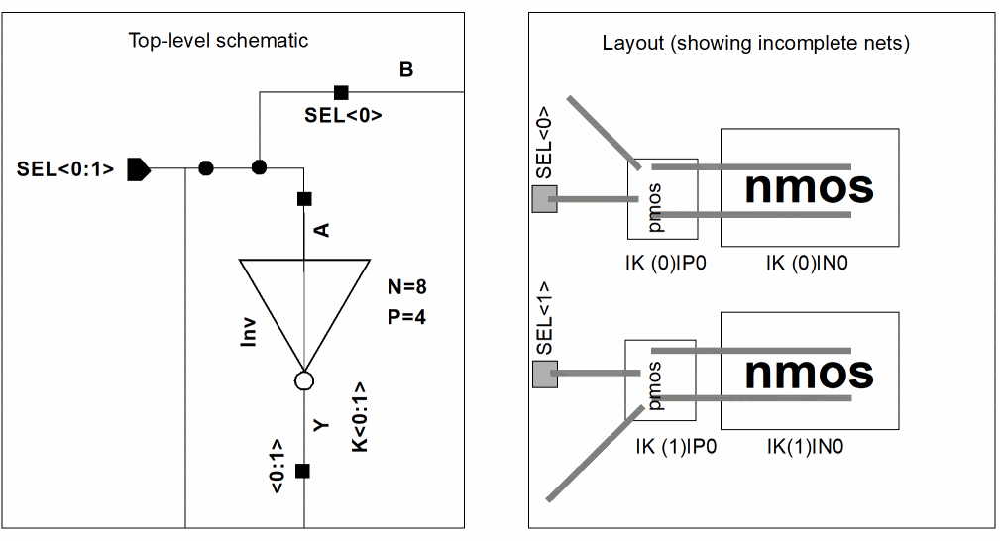

2
Preparing Your Connectivity Source
This chapter explains how to prepare a schematic connectivity source for your design, which you can then use to generate, place, and route a layout with the Virtuoso® Layout Suite XL layout editor (Layout XL).
This chapter covers the following topics.
- Schematic Design Elements
- Design Variables
- One-to-Many Mapping
- Properties in Layout XL
- Pins and Pin Names in Layout XL
Schematic Design Elements
You can use any schematic to generate a layout with Layout XL. However, the process is easier if you
-
Place symbols of devices and pins in the schematic approximately where you want them to be in the layout.
The Place As In Schematic command lets you place generated layout devices and pins in positions that correspond to the positions of their schematic symbols. If your design carries any unbound instances and pins, these are positioned below the PR boundary. -
Use consistent parameter defaults for comparable symbols.
Layout XL applies the parameters of the symbols to the layout devices.Layout XL does not pass to the layout instance CDF parameters that are not evaluated (i.e., that are not AEL expressions) and havecdfParamRec~>storeDefault=nil. These are master parameters and are expected to match for both schematic and layout master. If you require these parameters to be passed, setcdfParamRec->storeDefaulttotfor the schematic master parameters.
- Design variables. For more information, see Design Variables
- One-to-many mapping. For more information, see One-to-Many Mapping.
- Many-to-many and many-to-one binding.
If you are preparing a hierarchical design, you also need to make sure the symbol view of each top-level design element is mapped to the correct layout view of the corresponding layout element for generating the layout.
Design Variables
You can use the following design variables with Layout XL.
Netlist Processor Expressions
Netlist Processor (NLP) expressions are properties that specify parameter values. These expressions are used by the Open Simulation System (OSS) in netlisting.
For more information, see the Open Simulation System Reference.
Layout XL evaluates CDF parameters that begin with the string '[@' as netlist processor (NLP) expressions regardless of the value of the parseAsCEL environment variable.
Analog Expression Language Expressions
Analog Expression Language (AEL) expressions, such as iPar and pPar, define the value of a parameter as a function of other instance parameters or parameters passed from other levels of hierarchy. If you specify the value of a parameter using an AEL expression, the parameter
- Must be defined in the component description format (CDF) for the cell of which the symbol is a view.
-
Must be a string for which
parseAsNumberandparseAsCELproperties are set tot. - Must not have a CDF callback (because the evaluation of the expression does not trigger the execution of the callback).
If Layout XL detects a parameter value defined with iPar, pPar, or other AEL expressions not defined in the CDF, you see a warning in a message box.
Netlisting Mode
To ensure that Layout XL always evaluates CDF parameters correctly, make sure that
- The CDF parameters in question have the parseAsCEL option set to yes.
-
The
CDS_Netlisting_Modeshell environment variable is set toAnalogbefore you launch Layout XL.
You can also set CDS_Netlisting_Mode for the current session only. To do this,
-
Type the following commands in the CIW.
setShellEnvVar("CDS_Netlisting_Mode=Analog") cdsSetNetlistMode()
To check which mode is currently set,
CDS_Netlisting_Mode shell environment variable set to Digital, Layout XL will not evaluate the CDF parameters by default. But, you can set the dbSearchCDF SKILL function to t to cause CDF to be searched for parameter values.
For more information on CDS_Netlisting_Mode, see
For more information on AEL expressions, see
Simulation Design Variables
When you use simulation design variables to specify the value of a parameter in the circuit, Layout XL uses the value last saved during the simulation of the circuit as the value for the layout implementation.
For more information about simulation design variables, see
Design Constraints
On startup Layout XL transfers all the constraints defined in the schematic view to the layout view, correctly mapping the constraints and their members between the two views.
Constraints in the schematic are transferred to the top-level layout view. Constraints that have been created or changed in the schematic but not yet saved are also transferred.
Device correspondence information is maintained during the transfer. Logical and physical name bindings are tracked and constraints are updated appropriately to take account of folded instances in the layout.
For more information about constraint transfer, see Constraint Transfer.
One-to-Many Mapping
One-to-many mapping lets you map a single instance or pin in the schematic to multiple instances or pins in the layout. You can implement one-to-many mapping in Layout XL designs using
- Defining One-to-Many Mapping with Iterated Instances and Bus Pins
- Using the multiplication factor (mfactor)
- Using the series-connected factor (sfactor)
- Defining a One-to-Many Device Correspondence
Defining One-to-Many Mapping with Iterated Instances and Bus Pins
You can use iterated instances and bus pins to enable one-to-many mapping between pins and devices in the schematic and multiple instances of the pins and devices in the layout.
For example, the figure below shows
-
Bus pin
SEL<0:1>in the schematic mapped to bus pinsSEL<0>andSEL<1>in the layout. -
Iterated instance
K<0:1>mapped to instancesIK(0)|P0,IK(0)|N0,IK(1)|P0, andIK(1)|N0in the layout.

Properties in Layout XL
Before the Layout XL layout editor can create a layout from a schematic, you must create a layout device for every symbol in the schematic. The layout master of a device or contact can be a fixed cell, a parameterized cell (Pcell), or a device or contact defined in the technology file.
storeDefault=nil, then when you start the Generate All From Source command, the layout instance is not updated (i.e., the CDF default of the layout is used). This can lead to a parameter mismatch between the layout and the schematic.Pcells are often the most effective because you can assign the dimensions of the device at the time you generate the layout and vary the sizes of a contact each time you place the cell. For more information about Pcells, see the Virtuoso Parameterized Cell Reference.
For more information on the properties used by Layout XL, see Layout XL Properties.
Pins and Pin Names in Layout XL
For connectivity assignment tracing and cross-probing to work correctly in Layout XL, the pins and pin names in the layout cellview of a device must match those in the corresponding schematic symbol.
Extra Pins in the Symbol or Layout Views
Layout XL cannot maintain connectivity for any extra pins in the symbol view because there is no corresponding pin for the device in the layout view.
Conversely, Layout XL maintains connectivity for extra pins whose names are global nets (for example, vdd!) in the layout view. It also maintains connectivity for any extra pins in the layout that have their connectivity defined by inherited connections. The inherited connection can be defined relative to the layout instance itself or relative to the schematic hierarchy that ends with the schematic instance corresponding to that layout instance.
The look-up order used by Layout XL to determine the net to connect to an extra pin is:
- Inherited net expression on the layout pin.
-
Global net — global attribute or
!at the end of the net name. -
Property named
sub,sub_inh, orbnon the layout master.
External Connections
You can also define pins to be connected externally to the design.
- Must Connect connects selected pins in a net externally at a higher level of the hierarchy.
- Strongly Connected connects selected pins within the device. By default, pins are connected internally (strongly).
- Weakly Connected connects selected pins in a limited external connection to avoid specific internal connections (typically ones with high-resistance paths).
- Pseudo Parallel Connect connects selected instance terminals on the same net within an instance as though they were connected externally; that is, they are defined as a connection but need never be physically connected.
For more information about must-connect pins, strongly connected pins, weakly connected pins, and pseudoparallel connected pins, see
To permute pins, see permuteRule.
If you are using parameterized cells and want to give them the capability for abutment, see
Return to top